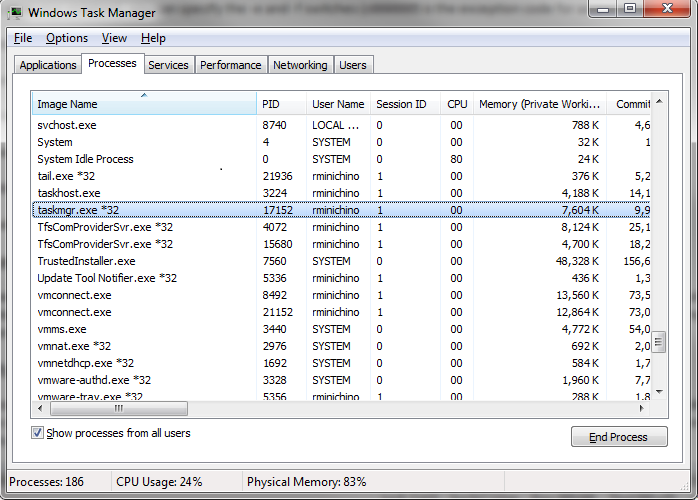
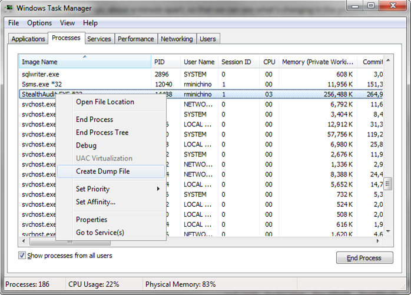
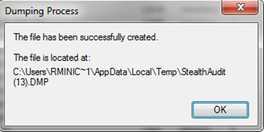

IMPORTANT: This article is outdated and is currently being updated. Some information may no longer be applicable.
Summary: This article provides instructions for how to execute a process dump of StealthAUDIT. This can be applied to other processes, as well.
Issue: Instructions for how to execute a process dump of StealthAUDIT. This can be applied to other processes, as well.
Instructions: How to Execute a Process Dump
Three methods will be covered:
- Use procdump.exe (http://technet.microsoft.com/en-us/sysinternals/dd996900.aspx). This works on all systems and provides more information than Task Manager
- Use 32-bit Task Manager on Windows 2008 or later (standard on 32 bit systems, requires special procedure on 64 bit systems)
- Use the standard 64-bit Task Manager on Windows 2008 or later (least preferred)
Using procdump.exe
If the StealthAUDIT Console or a data collector, analysis module, or action module running within it is experiencing access violations or out of memory errors, StealthAUDIT can run procdump.exe automatically if it’s present alongside the StealthAUDIT.exe file. The procdump.exe file should only be present while troubleshooting otherwise spurious dump files can fill up the disk. Copy prodcump.exe to the StealthAUDIT folder, then start StealthAUDIT normally. The dump files will be created under the StealthAUDIT\SADatabase folder, with names such as StealthAudit_131211_121213.dmp, with the numbers corresponding to the date (YMD) and time (HMS) of the dump.
For hangs or errors where StealthAUDIT is not automatically producing the dump files, such as an error on startup or shutdown, procdump.exe can create a process dump file immediately when it’s run, wait until or wait until there is an exception and trigger off automatically. To create a dump file immediately, start an administrator command prompt and run:
procdump -ma PID
where PID is the process ID of the process whose memory you want to dump, or:
procdump -ma processname
where processname is the name of the process you want to dump, such as StealthAUDIT.exe.
To wait for an exception (usually an access violation), you can specify the -e and -f switches (c0000005 is the exception code for access violation):
procdump -ma -e 1 -f c0000005 StealthAUDIT
If the StealthAUDIT process is not yet running, you can specify the -w switch to wait for StealthAUDIT, or the -x switch to start it:
procdump -ma -e 1 -f c0000005 -w StealthAUDIT
Starts procdump waiting StealthAUDIT to start, and waits for an access violation exception before creating a process dump file.
procdump -ma -e 1 -f c0000005 -x StealthAUDIT.exe MyJob
Starts procdump then starts StealthAUDIT and runs MyJob, waiting for an access violation exception before creating a process dump.
Using Task Manager to Create a Process Dump File
Windows Vista/2008 and later have the ability to create a process dump file from within Task Manager. However, on 64 bit systems. The default task manager is a 64 bit Task Manager, which creates 64 bit dump files. Since StealthAUDIT is a 32 bit process, it is more difficult to debug with these files than a 32 bit dump file. In order to start 32 bit Task Manager, first close Task Manager. Then go to Start->Run (or a command prompt) and type C:\Windows\SysWOW64\taskmgr.exe. (Note that Windows keeps the 32 bit executables in a directory with a 64 in its name.) Once you do this, look for taskmgr.exe in the process list. You should see a “*32” next to taskmgr.exe, signifying that it’s a 32 bit process:

Next, if UAC is enabled, click the “Show processes from all users” button so that Task Manager is running in elevated mode. This is required to dump StealthAUDIT.exe, or an “Access is denied” message is displayed.
Finally, right-click on StealthAUDIT.exe, and select “Create dump file”:

Once you do this, you’ll see a dialog that the dump is in progress. Finally, a dialog with the name and location of the dump file displays:

Pro Tip: You can select the file path text in the dialog box and copy it to the clipboard (Ctrl-C or right-click Copy).
You can do the same thing with the standard Task Manager on a 64 bit system, but in some cases, the 64 bit dump file is significantly less useful than the 32 bit dump, so please take a 32 bit dump whenever possible.
A Hung Process or a Process with a Memory Leak
It would be most helpful to execute at least two dumps, about a minute apart, so that we can see what’s changing in the process. Also, include any log files, such as a job log (check the date/time on the .tsv files to see which one is most recent) and SADebug.tsv. If there is already a StealthAUDIT process running, StealthAUDIT creates its debug log as SADebug.PID.tsv, where PID is the process ID of the StealthAUDIT.exe process.
Submitted by: Paul Pitas (previously submitted by Matt Squicciarini)
Product: StealthAUDIT
Affected Versions: N/A
Affected Module: N\A
Dev Ticket: N\A
Resolved In Version: N\A
KB Type: How